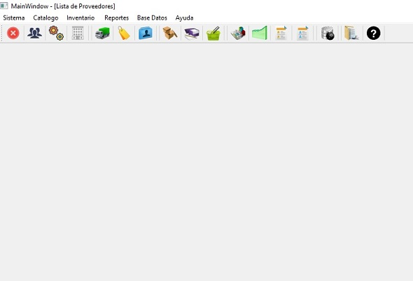

The control of merchandise allows to observe in a warehouse the dynamics of the products with regard to the requirements, their stook, and finally their entrances and exits. Thanks to this monitoring, money losses are avoided and the evolution of the price change of the products offered is observed. This application, made up of the modules of suppliers, products, sales, purchases and customers, aims to support the work of controlling a warehouse. Additionally, it allows users to obtain various reports more efficiently.
